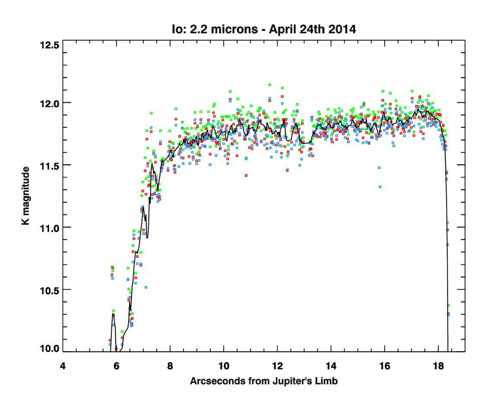

I'm of the opinion that Io is the most interesting body in our solar system. Nearly 200 volcanoes are active on it's surface, a consequence of tidal heating by Jupiter's gravity. Against Io's low gravity, volcanic plumes can rise hundreds of km above the surface, yielding stunning images with the Voyager 1, Galileo and New Horizons spacecraft. Volcanic activity varies stochasically, as does the temperature, and infrared telescopes can measure Io's thermal volcanic emission. It's not practical to regularly monitor Io's thermal activity from world class IR telescopes, but it's still very important. A 31 inch telescope at Fan Mountain Observatory in rural Covesille, Virginia nicely fills this niche.
Only a few spectral windows in Earth's atmosphere are transparent to infrared light. The reddest wavelength one could measure from any observatory on the US east coast is about 2.4 microns. Our Sun puts out a lot of light at this wavelength and Io reflects it back. So how does one see Io's volcanoes against such the shiny infrared reflection? Look in eclipse! Io was in Jupiter's shadow for about 45 minutes in the above movie. All of the light recorded from that central dot is from Io's own thermal light, i.e. volcanoes. Jupiter is at it's right and the little dot next to Io is the moon Amalthea; it's only 85 km in radius, though quite lumpy, and it's in full sunlight. Background standard stars allow easy calibration of these data, using a technique called differential photometry. Each colored point below it Io's brightness relative to a star, forming a light curve that measures Io's volcanic activity.

The material ejected by Io's volcanoes is gross and smells terrible. It's mostly sulfur dioxide, i.e. rotten eggs, with a little bit of table salt, NaCl, some potassium chloride used in fertilizers, and sulfur monoxide, which isn't stable in our atmosphere but please don't eat it if you find some. Really interesting things happen to this material. Some forms localized atmospheres that can condense and sublimate, some forms diffuse clouds that orbit Jupiter and some is ionized by UV sunlight and electron impacts.
Updated 2016-04-27